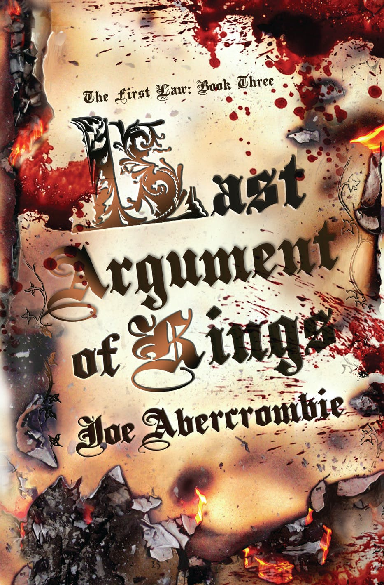

First Law Trilogy

The plot of the original trilogy involves three major powers: The Union, the Gurkish Empire, and the North, recently united under King Bethod. There are two major theaters of war. The first takes place in the north between the Union and the Northmen, who invade the Union's northern province of Angland. The second is in the south between the Union and the Gurkish Empire, who attempt to annex the Union city of Dagoska. The trilogy centers on the fortunes of a variety of characters as they navigate through these and other conflicts. The trilogy follows the stories of six point-of-view characters, whose paths often intersect.
The Books
The Blade Itself
Before They are Hanged
The Last Argument of Kings

Synopsis
Logen Ninefingers, infamous barbarian, has finally run out of luck. Caught in one feud too many, he’s on the verge of becoming a dead barbarian – leaving nothing behind him but bad songs, dead friends, and a lot of happy enemies.
Nobleman Captain Jezal dan Luthar, dashing officer, and paragon of selfishness, has nothing more dangerous in mind than fleecing his friends at cards and dreaming of glory in the fencing circle. But war is brewing, and on the battlefields of the frozen North they fight by altogether bloodier rules.
Inquisitor Glokta, cripple turned torturer, would like nothing better than to see Jezal come home in a box. But then Glokta hates everyone: cutting treason out of the Union one confession at a time leaves little room for friendship. His latest trail of corpses may lead him right to the rotten heart of government, if he can stay alive long enough to follow it.
Enter the wizard, Bayaz. A bald old man with a terrible temper and a pathetic assistant, he could be the First of the Magi, he could be a spectacular fraud, but whatever he is, he's about to make the lives of Logen, Jezal, and Glokta a whole lot more difficult.
Murderous conspiracies rise to the surface, old scores are ready to be settled, and the line between hero and villain is sharp enough to draw blood.

Synopsis
Superior Glokta has a problem. How do you defend a city surrounded by enemies and riddled with traitors, when your allies can by no means be trusted, and your predecessor vanished without a trace? It’s enough to make a torturer want to run – if he could even walk without a stick.
Northmen have spilled over the border of Angland and are spreading fire and death across the frozen country. Crown Prince Ladisla is poised to drive them back and win undying glory. There is only one problem – he commands the worst-armed, worst-trained, worst-led army in the world.
And Bayaz, the First of the Magi, is leading a party of bold adventurers on a perilous mission through the ruins of the past. The most hated woman in the South, the most feared man in the North, and the most selfish boy in the Union make a strange alliance, but a deadly one. They might even stand a chance of saving mankind from the Eaters — if they didn’t hate each other quite so much.
Ancient secrets will be uncovered. Bloody battles will be won and lost. Bitter enemies will be forgiven — but not before they are hanged.
Synopsis
The end is coming.
Logen Ninefingers might only have one more fight in him but its going to be a big one. Battle rages across the North, the King of the Northmen still stands firm, and there's only one man who can stop him. His oldest friend, and his oldest enemy. Its past time for the Bloody-Nine to come home.
With too many masters and too little time, Superior Glokta is fighting a different kind of war. A secret struggle in which no-one is safe, and no-one can be trusted. His days with a sword are far behind him. Its a good thing blackmail, threats and torture still work well enough.
Jezal dan Luthar has decided that winning glory is far too painful, and turned his back on soldiering for a simple life with the woman he loves. But love can be painful too, and glory has a nasty habit of creeping up on a man when he least expects it.
While the King of the Union lies on his deathbead, the peasants revolt and the nobles scramble to steal his crown. No-one believes that the shadow of war is falling across the very heart of the Union.
The First of the Magi has a plan to save the world, as he always does. But there are risks. There is no risk more terrible, after all, than to break the First Law...